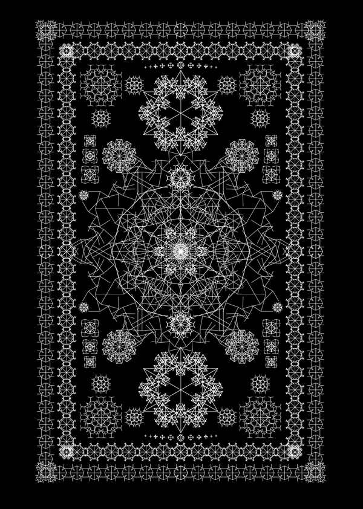
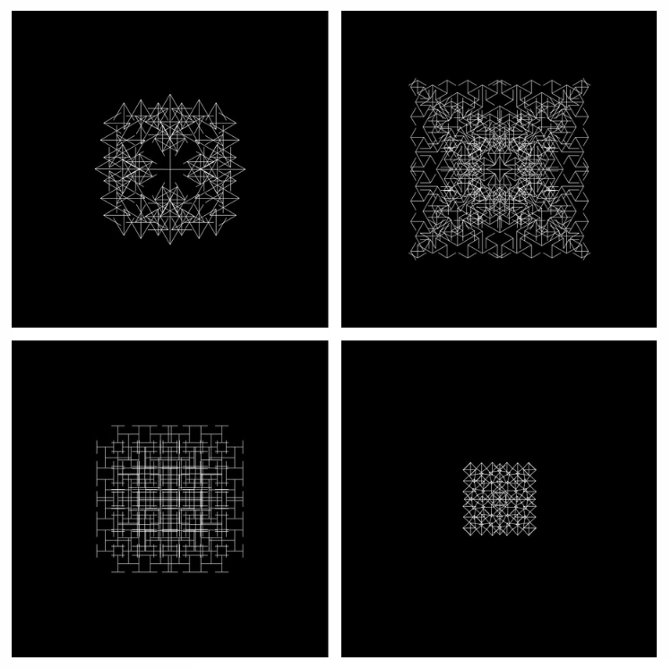
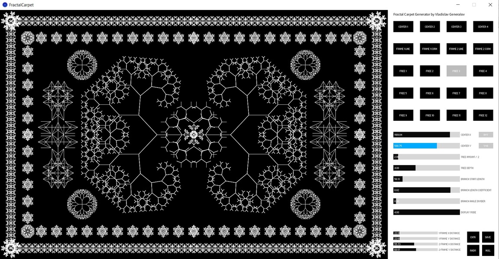
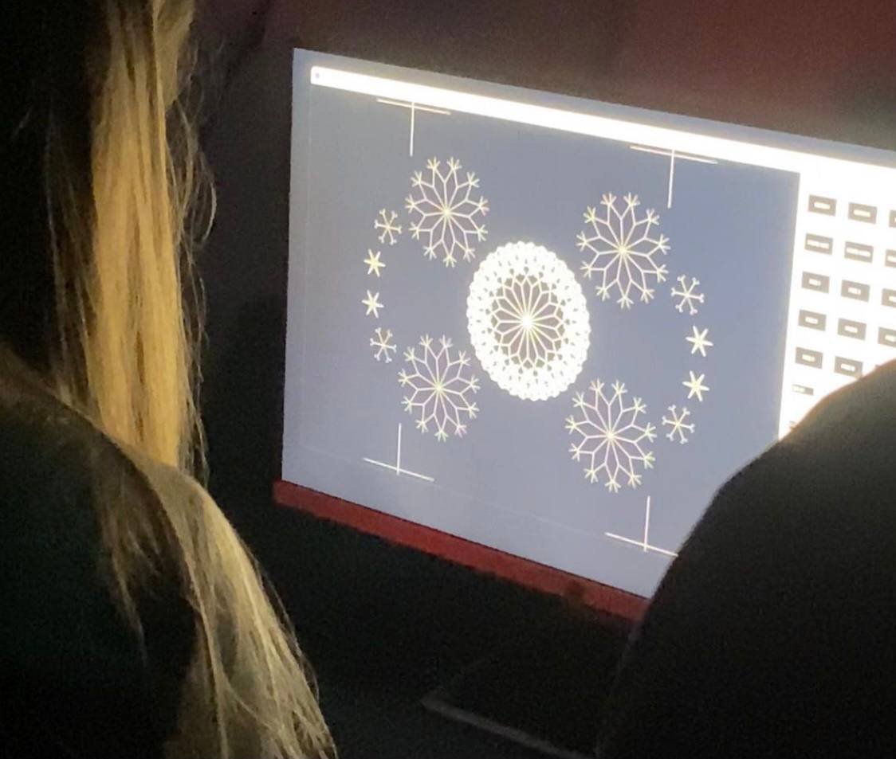

Fractal Carpet Generator

Fractal Carpet Generator is a handmade graphic editor for creating monochrome carpet-like images consisting of fractal objects.
Each fractal object is a number of fractal trees with same parameters and starting point.
Fractal objects parameters are: its center X,Y coordinates, amount of fractal trees, fractal trees' depth, branch start length, branch length coefficient.
The program was created using the Processing programming environment. The idea of such graphic editor comes from my attempts to create an image of a carpet consisting only of fractal structures and using only program code.

These 4 images are the examples of different fractal objects containing 4 fractal trees each.

Program interface provides the ability to create up to 20 fractal objects; 4 of which have presets for creation central carpet elements; 4 of which have presets for creation frames and corner elements.
